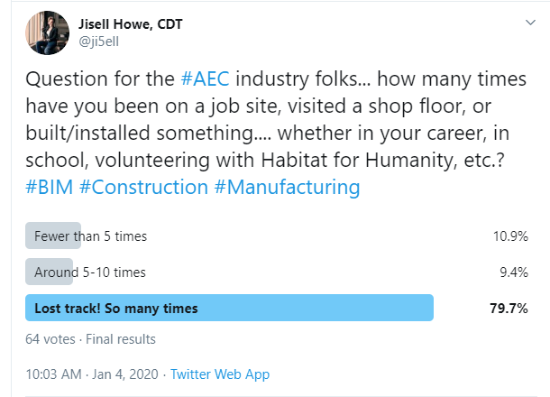

In November 2017, I was invited to take part in a panel at Autodesk University on standardizing BIM content. There were “stakeholders” represented, such as an architect, engineer, and contractor.
We discussed manufacturer BIM content, LOD in Autodesk Revit, and uses of BIM content throughout the project life cycle.
I learned that there were several different needs and ways in which each “stakeholder” used Revit content. These insights gave me the impression that the quest for the “perfect BIM project” apparently holds multiple definitions.
Some people may find that manufacturer specific Revit content is too much for their needs in a certain stage of the project, so they either scrub models or create them from scratch. It made me wonder, is the amount of detail just one view of being perfect?
Others may find that some manufacturer Revit content risks being way too detailed and complex down to every little modeled nut and bolt on a piece of equipment. A much simpler model that gets the job done is preferred. Is this another view of being perfect?
Since Revit is just one vehicle for BIM, there is something else to consider, and that lies with Autodesk Fabrication CADmep content and beyond.
In a general sense, Fabrication content really places its importance on accurate dimensions, so that models can later be visualized and help prevent issues in the field. That’s all well and great. However, there is something I would like to bring more attention to in the industry.
Virtual World vs. Real World Construction
To preface this next part, I want to reference to an article I read on LinkedIn, very appropriately called “Level of Accuracy: The Virtual World vs. Reality and Cost to Our Business.”
This excellent article by David Francis talks about what actually happens on the job site compared to what is created digitally.
Working for a design department within a manufacturing company has offered me a wonderful intersection and perspective to explore. I not only support the creation of BIM content for designer and customer use, but I also understand the data that goes into it.
I can say that while excellence is the goal, I can also say that manufacturer product tolerances do indeed exist. If they didn’t, so many more products would be rejected on the shop floor, or there could be even more variance.
Losing the Forest for the Trees
For someone who does not install or build on a daily basis, it can be so easy to get lost in the numbers. I’m talking about very precise dimensions in software that a standard tape measure can’t even compete with, simply because software can be so precise these days. As the article I referenced on LinkedIn mentions, things like expansion/contraction, the other properties of pipe, and the skill level of the person installing can also affect things in real life.
How can you account for those things in software, especially in the case of an installer’s skill level making the difference? Hmm.
Construction technology tools can be amazingly accurate, but they cannot beat actual on site experience, no matter how much we all strive for quality. It’s on site where I believe you can gain experience in what matters most in design. Now join me as we take a trip in a time machine.
My Job Site Experience
About eight years ago in my early career, I went on more job sites and could see immediately that the radiant heated flooring tubing design I may have drawn up beautifully in software looked slightly different in real life on the job site. A small obstacle that wasn’t on the plans perhaps caused a slight detour in installation. The spacing of the radiant loops for a given size of tubing didn’t result in a perfect bend, even though I made it do it perfectly in design software. Regardless, the design calcs were still spot on and the product as designed served its purpose.
Habitat for Humanity
Over ten years ago, I also built scaffolding up multiple stories (yikes), installed windows, and put up drywall as a volunteer for Habitat for Humanity.

I’m thankful that I was able to get opportunities over the years to participate in these valuable experiences. They showed me that real life happens on job sites, no matter what is done in a perfect software design. Not only that, I really enjoyed being out in the open air on a wonderful summer day for a change.
BIM Standards and Practices
So, this bring me back to my original points. It seems that in the quest for the perfect BIM project, there could be multiple interpretations and ways of doing things. Industry wide BIM standards can be a challenge to implement; I’ve seen valiant efforts there. Software changes over time to allow new features, so that also changes the game a bit as well.
Additionally, one person’s “easy button” can be another person’s headache. One person’s perfect Revit family can be another person’s head scratcher. I think that the potential culture of perfection might be clouding what I think brought many of us to the industry in the first place.
Trade School Experience
When I first attended college at Dunwoody College of Technology for my Architecture degree, I felt like I was going to Harry Potter’s School of Witchcraft and Wizardry. Hear me out.
I felt like I was learning some amazing hands-on skills. I built model houses from foam and wood, did surveying in the school hallways with theodolites, and took pictures on job sites for site analysis. When I wasn't doing those things, I was hand drafting, doing lettering assignments, drawing in AutoCAD, and modeling in Revit. It was like I was learning the "magic" of the trades. And, I was following in my dad's footsteps. Bonus.
By the way, I'm stuck with lettering now for the rest of my life. It's either lettering or cursive. There is no in between ;).
Today's education in this industry might put a lot of focus on the latest and greatest technology. But I do think that regardless of the education, we need to remember something very important:
No matter how perfectly we design today, real life will always happen on the shop floor and the job site.
Realizing this will help us form collaboration strategies for what is actually critical and build our technology around that.
Twitter Poll & Responses
I put an informal pollon Twitter the other day. The idea behind it was to see how many people had first hand experience participating in the built environment. It's important to note that the results are from the people who saw the poll and chose to respond; it isn't a statement about everybody.

If I were to answer the poll myself, I would probably be at about 10+ formal events. These include job site visits for site analysis, volunteering days at Habitat for Humanity, visiting multiple manufacturing and fabrication shop floors, and physical product installation training at work. It doesn't include the countless bird houses and tree house projects I worked on with scrap wood as a kid. It also doesn't include the regular collaboration with folks in the manufacturing office that I currently do.
Poll Comments
Additionally, I had supporting comments, conversations, and clarifications that I think really bring up some excellent points. Doing is different from seeing, and being there is different from not being there. Here is just a small selection of them and there are a lot more that came in here on the original post. Thank you for the comments!
This poll shows that experience on job sites is really important to have for having a career in this industry. The bright and shiny software tools are there to help, but they are not to replace real world experience.
As you can see, many cite that "the experience is invaluable", that it made them "rethink how detailing is done" and that it made them better at what they do now. That's not to say that communication shouldn't happen both ways. Everyone needs to be on same page, regardless if in the field or office.
I think this last comment really resonates with me simply because I really enjoyed my own experiences being on site.
"Regardless of anything successful I might have done recently, they are still the best years of my professional life."
– Chiara Rizzarda
I felt that everything I did hands-on had so much meaning. I can now drive by the houses I worked on years ago and say "I installed the windows there" or "I put up sheetrock in their basement." It's a solid case of accomplishment.
It's not that what I do now does not have meaning or that I do not love it, but there is something special to be said about seeing the actual result of something in real life. I had a wonderful time going down memory lane and reflecting on old photos for this post.
Call to Action: Learn and Communicate
If you have not been on a job site as often as others, don't worry, it's not a competition. It's a point of self awareness to maybe bring about a valuable opportunity to get more involved. Tag along to an install at work, see what it's really like to build something, and address disconnects between field and office. You may be very surprised at the results.
Even for those who have been on site many times, different products and trades offer different experiences as well. Nobody should be immune to learning something new. Just the effort of getting out of your comfort zone to see another perspective will do wonders for communication. We can then get better outcomes together, whether it is building BIM content, coordinating construction meetings, or getting steel toe boots muddy on site. I'm always willing to learn to improve my insights as well, of course.
In closing, strong communication across the trades and between office and field is what will ultimately make the buildings stand up, not the allure of digital perfection.
Disclaimer: Views expressed here are my own and are not endorsed or otherwise affiliated with my employer.
Sources:
Engel, M. [mengelmn]. (2020, January 4th). It would be of interest to [k]now the breakout. [Tweet] Retrieved from https://twitter.com/ji5ell/status/1213491064214032384
Francis, D. (2015, December 22). Level of Accuracy: The Virtual World vs. Reality and Cost to our Business. Retrieved January 7, 2020, from https://www.linkedin.com/pulse/level-accuracy-virtual-world-vs-reality-cost-our-business-francis/.
Maller, A. [Twiceroadsfool]. (2020, January 4th). For sure. I think it should be a mandatory part of architectural licensing. [Tweet] Retrieved from https://twitter.com/ji5ell/status/1213491064214032384
Mackey, B. [TheRevitGeek]. (2020, January 4th). [A]greed most designers say they learn a ton. [Tweet] Retrieved from https://twitter.com/ji5ell/status/1213491064214032384
Mackey, B. [TheRevitGeek]. (2020, January 4th). While at the woodworking shop I used to do site installations. [Tweet] Retrieved from https://twitter.com/ji5ell/status/1213491064214032384
Irwin, P. [BIMchiq]. (2020, January 4th). Spent a whole year onsite doing full time CA. [Tweet] Retrieved from https://twitter.com/ji5ell/status/1213491064214032384
Raynor, D. [Revit_Dr_MEP]. (2020, January 4th). I worked before college as an HVAC technician. [Tweet] Retrieved from https://twitter.com/ji5ell/status/1213491064214032384
Revolution Design [Rev_Design]. (2020, January 5th). Intentionally had summer jobs framing houses. [Tweet] Retrieved from https://twitter.com/ji5ell/status/1213491064214032384
Rizzarda, C. [CrShelidon]. (2020, January 4th). I started my career as a site surveyor. [Tweet] Retrieved from https://twitter.com/ji5ell/status/1213491064214032384
Thomas, J. A. [jadamthomas]. (2020, January 5th). Started in family construction business with residential. [Tweet] Retrieved from https://twitter.com/ji5ell/status/1213491064214032384